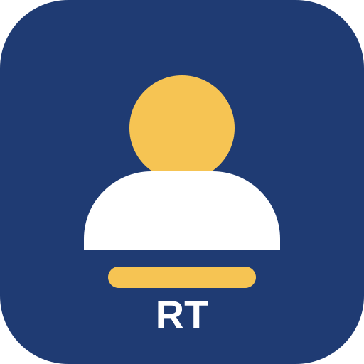

Bienvenida
Este es un sitio web sencillo desarrollado para demostrar el despliegue de una aplicación web en Railway dentro de un contenedor Docker.
Ver video en servicio de streaming
Este es un sitio web sencillo desarrollado para demostrar el despliegue de una aplicación web en Railway dentro de un contenedor Docker.
Ver video en servicio de streaming